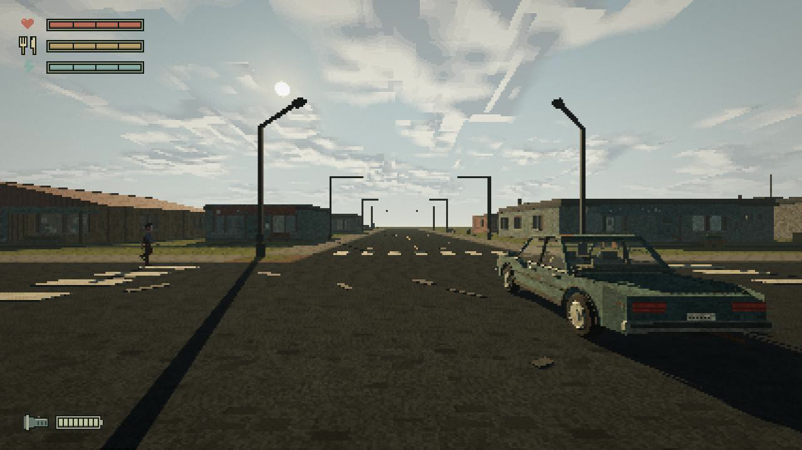
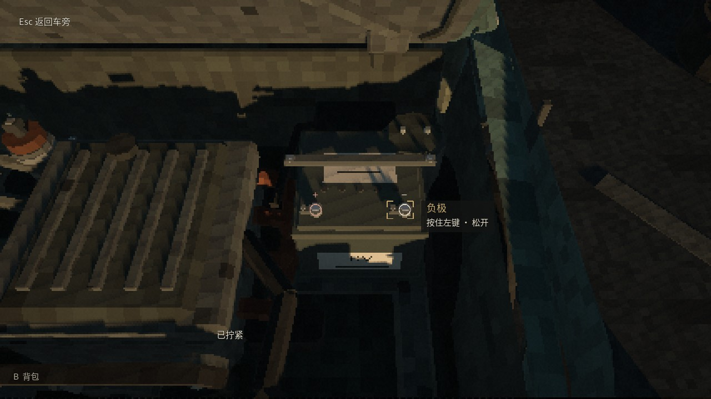
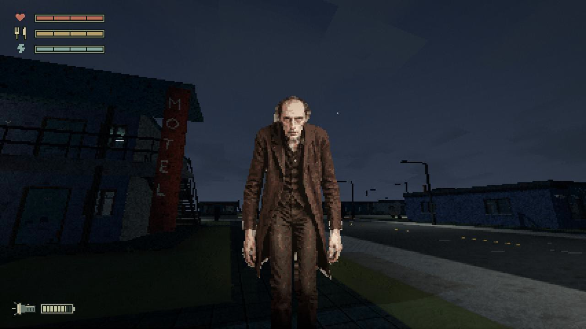

一辆坏车，一座陌生的小镇。
找到工具，修好它。
然后，离开这里。
约 70 秒实机剪辑。探索陌生建筑，检查车辆，在天色变化中面对逐渐靠近的危险。
先看作品集理解设计与实现，再通过美术集了解风格选择、角色与道具迭代。
用一项具体的维修目标，将环境、资源与生存压力连接成可体验的游戏闭环。
阅读线索，打开新区域。收集钥匙、工具与有限物资，在陌生街道中建立自己的路线。
逐步处理八孔轮胎、电池、线圈与皮带。用部位反馈和前置条件理解车辆为什么还不能发动。
与 B 对话，留意维尔的异常。完成车辆检查后返回驾驶席，启动离镇流程。



我负责项目方向、需求与范围、玩法取舍、视觉比较和运行效果验收。从独立原型到场景整合，通过试玩和问题复现推进迭代，最终整理为可下载的 Windows Demo。
Codex 辅助推进 GDScript、程序化建模和资源接入；角色与部分道具采用 AI 辅助图像制作。图册区分真实运行画面、生成资产和历史方案，并保留第三方来源。
当前 NPC 使用预设规则与对白；B 的双面图像属于已制作素材，SAN 驱动切换尚未交付。可玩内容以下载的 Demo 为准。
查看制作说明 ↗Windows x64 · 约 102 MiB · 无需安装 Godot
下载后完整解压，运行 ImpostorTown.exe。
包含惊吓与追逐场景。开发中版本，欢迎通过 GitHub Issues 反馈体验。
Godot Forward+ / Vulkan。已在 RTX 4060 Laptop 环境验证，最低配置尚未建立。首次启动可能准备着色器。存档位于 %APPDATA%/ImpostorTown_Demo_0_1；“重新开始”会在确认后清空当前一轮进度。